Velocidade que virou memória
Uma coleção visual de cavalos japoneses que transformaram cada corrida em um capítulo inesquecível.
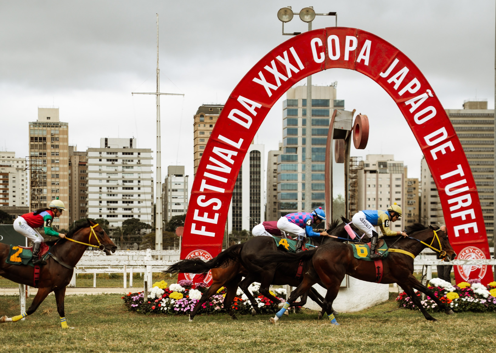
Pista Imperial
Uma coleção visual de cavalos japoneses que transformaram cada corrida em um capítulo inesquecível.

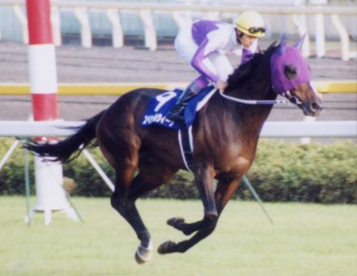
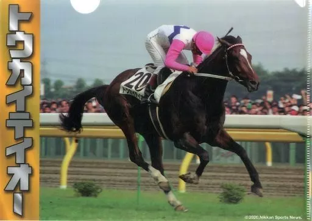
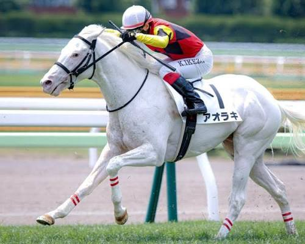
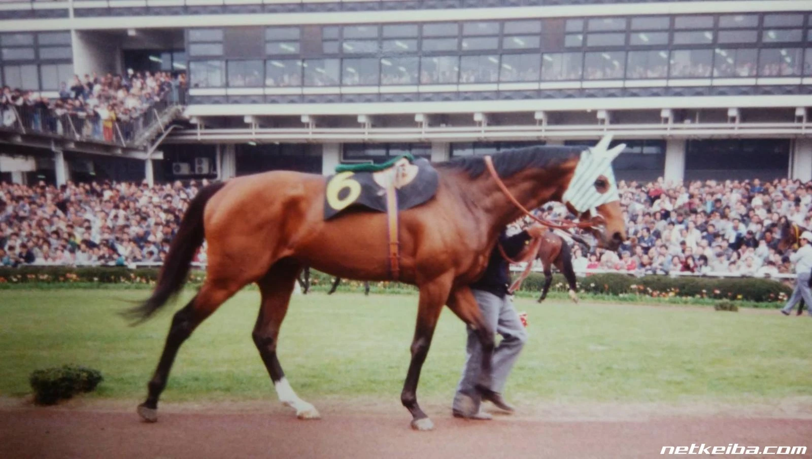
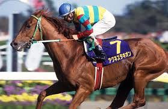
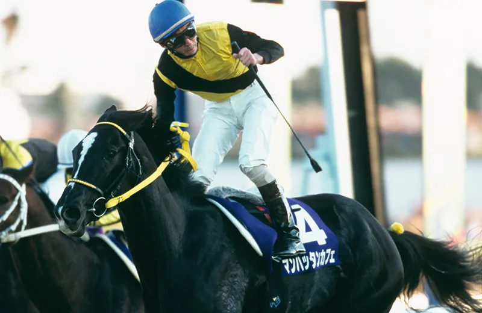
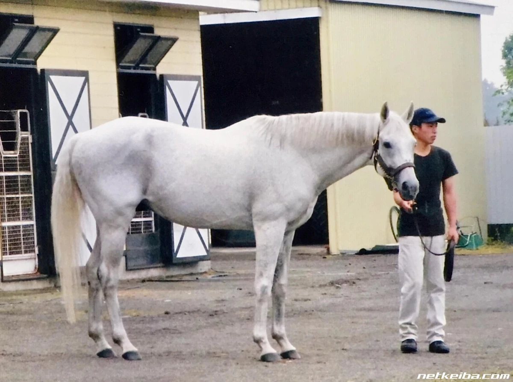
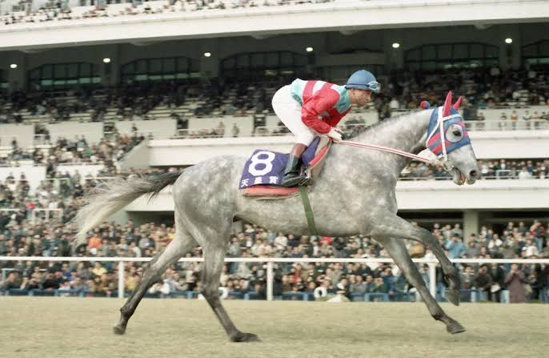
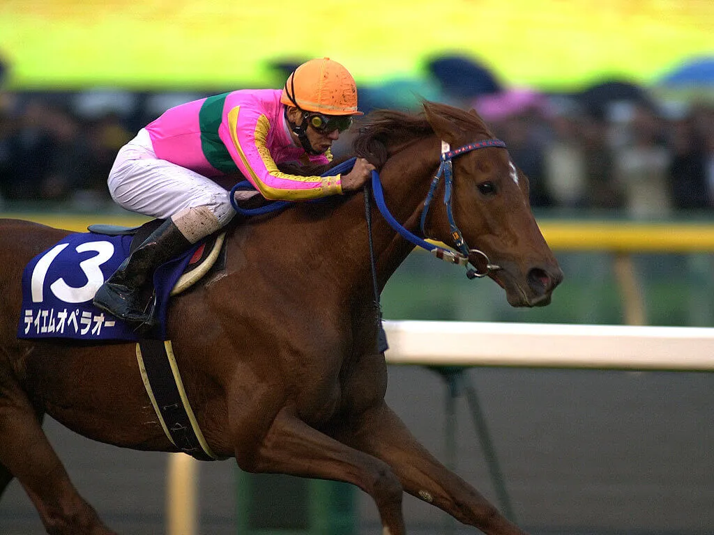
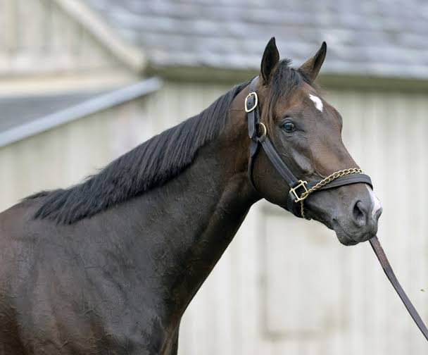
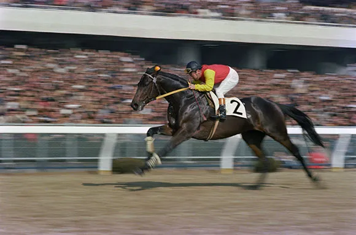
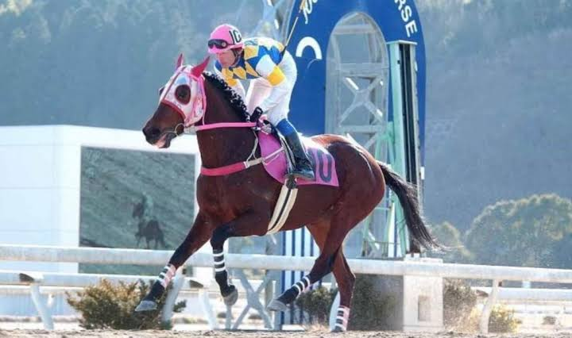